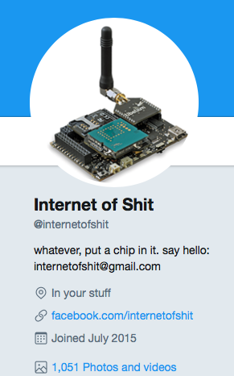

Palinta
Home(made) automation
Table of contents
- Introduction into IoT
- Smart home systems
- How to make a super smart home system...
Internet of Things
“ The Internet of things (IoT) is the network of physical devices, vehicles, home appliances and other items embedded with electronics, software, sensors, actuators, and connectivity which enables these objects to connect and exchange data. Each thing is uniquely identifiable through its embedded computing system but is able to inter-operate within the existing Internet infrastructure.”
(Wikipedia - Internet of things)
https://thefutureofsmart.wordpress.com/2014/10/04/the-first-iot-device-a-coke-machine/
IoT Applications

Internet of Shit
Home automation
(smart home, smart house, domotics)
Why do we need a smart home?
Types of home automations
- First generation: wireless technology with proxy server, e.g. Zigbee automation;
- Second generation: artificial intelligence controls electrical devices, e.g. Amazon Echo;
- Third generation: robot buddy who interacts with humans, e.g. Robot Rovio, Roomba.
Home(made) automation
- How to start ...
- How to create "smart" components?
- How to communicate with the "smart" components?
- How to connect them to each other?
Hacking Time

How to choose the right hardware components?
Software of the particle photons
Helios
Greek mythology: The personification of the Sun in the
Here: a component for controlling lights
Prometheus
Greek mythology: A Titan, who stole the fire from the Gods and gave it to the humanity.
Here: a component for measuring temperature
Iris
Greek mythology: the personification of the rainbow, messenger of the Gods
Here: a component with RGB LED's
How to put in action our smart components?
IFTTT

Use local services
We love diagrams. Diagrams are cool.
Grafana & InfluxDB
Other examples
References
- Particle: https://www.particle.io
- Particle Cloud image: https://github.com/99xt/callstatus-notifier/wiki/Particle-Photon
- Particle Photon datasheets: https://docs.particle.io/datasheets/photon-(wifi)/photon-datasheet/